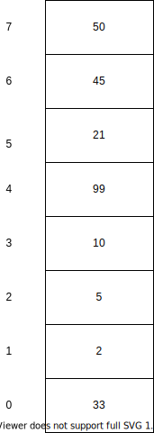
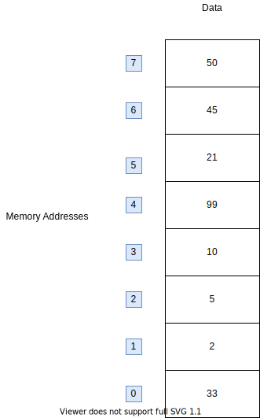
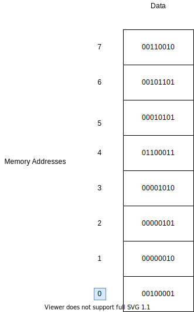
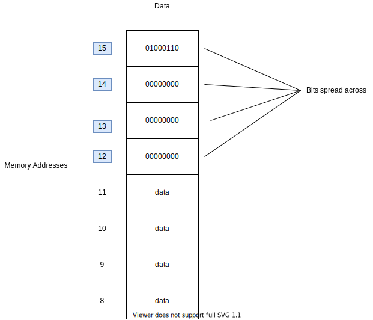
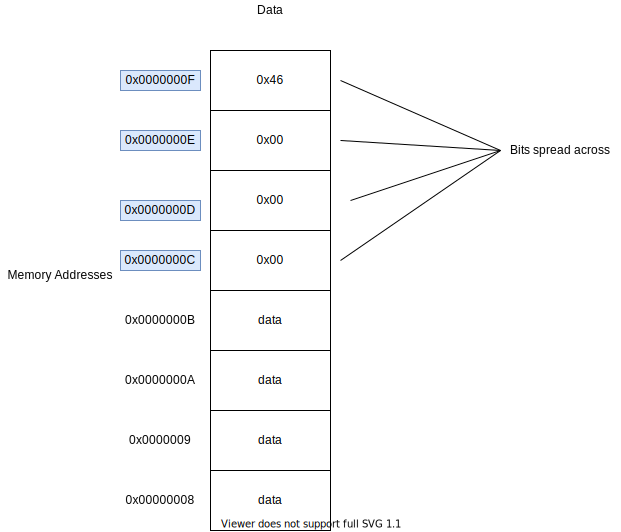

Memory in MIPS Explained
Memory in the MIPS architecture is something very important to understand.
To start, let's go back to C/C++ and look at a structure that works very similar to how memory works in MIPS.
int foo[8] = {33, 2, 5, 10, 99, 21, 45, 50};
Yes, that's right arrays. Here we've declared an array of size 8 and filled it with some integers.
You know that with arrays, you can index them with integers to get data from them
int i = foo[0] // This will set i equal to 33
int j = foo[4] // This will set j equal to 99
The following illustrates how arrays work:
We have numerical indicies that we use to retrieve data from our array.
If you can understand this, you can understand memory in MIPS. It's the same idea, we just give things different names.
For example, the numerical indicies (left hand side of our diagram) we use in array are called memory addresses when talking about memory.
The array itself is our memory. Memory is simply an array. We store data in our memory array, just like we do in programming languages like C/C++, and we retrive data from our memory with numerical indices, or memory adddresses.
Of course this leads to a couple key questions. What data do we store in our memory array? How big is our memory array?
Let's tackle the first one.
The data we can store in MIPS memory are bits. That's it, just 1's and 0's. In MIPS, each memory address maps to 8 bits of data or 1 byte.
Let's convert our numbers in the previous diagram to their bit representations, or to binary:

So 33 becomes 00100001, and so on. Notice that no value is bigger than 8-bits. What if I wanted to retrive 33 from my memory? We know it's memory address to be at 0, so just like an array, we index our memory at 0 to retrieve that data.
In MIPS assembly, it would look like this:
lw $t0, 0($0)
Particularly, look at what the last part is saying: 0($0). The zero register holds the value zero. The 0 that is outside the paranthesis is our offset.
Does that sound familar? The offset is identical to our numerical index when using arrays!
It's the same idea. Arrays are sequential blocks of memory.
But why do we need the $0 register anyways? In order to use the "lw" instruction it require a base memory address value that is stored in a register. We can't just do:
lw $t0, 0 # this won't work!
Remember, memory addresses are just integers we use to index our memory array. The expression 0($0) is calculationg that memory address in the form: base address + offset.
So ask yourself, what is 0 + $0? Well the zero register $0 holds 0, so 0 + 0 is 0. Okay, we've calculated our index, or memory address. Now it's time to index our memory array and retrieve the value.
Look at the left side of our diagram and find memory address (index) 0. We then retrive the data stored at that address: 00100001 in binary or 33 in decimal.
What if you wanted to retrive the value 01100011 from our memory? Find it's memory in the diagram. Okay it's 4. Remember our expression: base address + offset = memory address. To retrive our value, we do the following:
lw $t0, 4($0)
Base address = 0, offset = 4, memory address = 4 + 0 = 4. We index our memory at 4, and get the value 01100001. Simple.
Machine Words
The discerning may notice a problem with our MIPS code though. The instruction "lw" stands for load word. What does that mean really? What is a word?
A word or machine word, is the size (in bits) of data a machine's CPU can optimally handle.
In MIPS, that size is 32-bits. It's no coincidence that registers are also 32-bits in size. So load word loads a word of data, or 32 bits. Why is that a problem?
Our memory stores 8 bits at each memory address. The reason for this is because MIPS memory byte addressable. Right, that makes sense, 1 byte at each memory address.
Intergers in MIPS are one word in size, or 32-bits. We can't store an integer in a single memory address, because we have only have 8 bits available at a given address.
Instead, we spread our 32-bit integer across 4 memory addresses. Right, 4 address which hold 8 bits is 32 bits. Let's consider an interger, 70. It's 32-bit represenation is as follows:
I assume you can convert decimal to binary. If not, use an online converter here, or just take my word.
Let's store our integer in our memory, say at memory address 12. In C we would do something like:
array[12] = 70;
In MIPS, we have to store our value 70 in a register first. And then store it in our array.
li $t0, 70 # store 70 in a register
sw $t0, 12($0) # store at 0 + 12 = memory address 12
Now, let's understand what happens here. We know 70 is 32-bits in size. We cannot store all of it's bits at memory address 12. Let's see what MIPS does.
We see the 32 bits of 70 are not just in memory address 12, the first 8 bits, or leading bits, are at 12, the next at 13, the next at 14 and finally the last 8 bits at 15.
Remember, load word loads a machine word, or 32 bits. So if I want to retrive my value, I would use the following MIPS code:
li $t0, 12 # Storing our memory address in a register
# base address = 12, offset = 0, memory address = 12
lw $t1, 0($t0)
To really drive home the fact memory address are just integers, we stored the memory address of our 70, 12, in a register. That way our offset can just be 0. But what's going here?
Load words loads 32 bits of data into a register. Of course, memory address 12 only holds 8 bits of data. So what load word does is it starts memory address 12 and stops until it reaches 32 bits.
- Memory Address 12: 00000000
- Memory Address 13: 00000000
- Memory Address 14: 00000000
- Memory Address 15: 01000110
- Okay done!
Register can hold 32-bits, so those bits get stored in the register. And just like that we've retrived our integer 70. But of course any 32-bit value can be stored in memory: strings, return addressess etc.
Hexadecimal
It's more common to express memory addressess and data in hexadecimal as these thing get quite large. For example, memory address 0xFACBFAFF would be 4207672063 in decimal. That's rather hard to process, let's update our diagram.
We converted our binary bits for 70 into hex, and our memory addresses to hex. 70 in hex is 0x00000046 and you can verify it in the diagram.
You may be a bit put off by hexadecimal, but remember, it's still just a number. This diagram is equivalent to the other one. You may want to get comfortable with thinking in hexadecimal, as you'll find it's often more convenient to represent numbers this way.
Memory Addresses
One last thing about memory addresses. We noted we could store memory addresses in registers.
Memory addresses themselves can be no larger than 32 bits, they are a word long. That's why can store them in 32-bit registers.
Now, to answer our question, how big is our memory array?
It's as big as we can index, which is to say it's size is limited by the size of our memory addresses.
In hex, the biggest memory address we have in MIPS is 0xFFFFFFFF, where each bit in our 32 bit address is 1. Let's convert that to decimal: 2^32 = 4294967296.
What does mean? It means we have 2^32 unique locations to index our memory array. Each location can hold 8 bits, so the amount of memory we have access to with our 32 bit memory address is 2^32 bytes which is about 4 GB.
Conclusion
I hope you've gotten a better understanding for how memory is organized in MIPS. Make sure you understand these fundamental ideas, as it's key to understanding MIPS architecture as a whole.